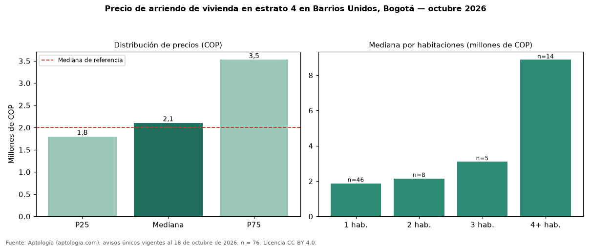

Precio de arriendo de vivienda en estrato 4 en Barrios Unidos, Bogotá — octubre 2026
Con 76 avisos únicos, el canon mediano de vivienda en estrato 4 en arriendo en Barrios Unidos, Bogotá es COP 2.106.500 al mes. Eso es 5 % más que la mediana de toda la oferta de arriendo en Barrios Unidos (COP 2.000.000). Por metro cuadrado, la mediana es COP 51.793/m² (+1 % frente a COP 51.323/m²). Por habitaciones: 1 habitación, COP 1.875.000 (n = 46); 2 habitaciones, COP 2.150.000 (n = 8); 3 habitaciones, COP 3.100.000 (n = 5); 4 o más habitaciones, COP 8.875.000 (n = 14). El rango intercuartílico va de COP 1.799.225 a COP 3.525.000 (razón 2,0). El área mediana es 34 m² (referencia: 35 m²). La administración mediana informada es COP 341.500 (16 avisos), cerca de 16 % del canon. Datos abiertos CC BY 4.0 de Aptología; fuente y búsqueda de inmuebles: https://www.aptologia.com/estrato-de/bogota/barrios-unidos. Archivos: PDF de 2 páginas, CSV con las cifras y gráfica PNG.

| Avisos únicos | 76 |
|---|---|
| Percentil 25 | COP 1.799.225 |
| Mediana | COP 2.106.500 |
| Percentil 75 | COP 3.525.000 |
| Mediana por m² | COP 51.793 |
Fuente: avisos vigentes de portales inmobiliarios recopilados por Aptología, deduplicados (mínimo 30 avisos únicos por celda). Precios pedidos, no cerrados. Fecha: 2026-10-18.